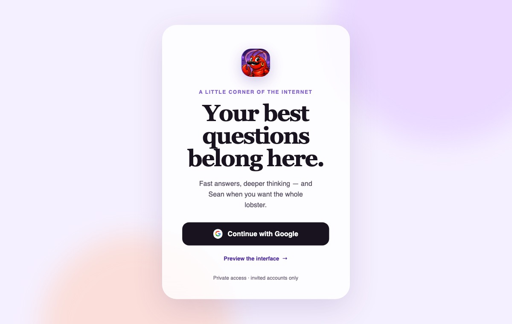
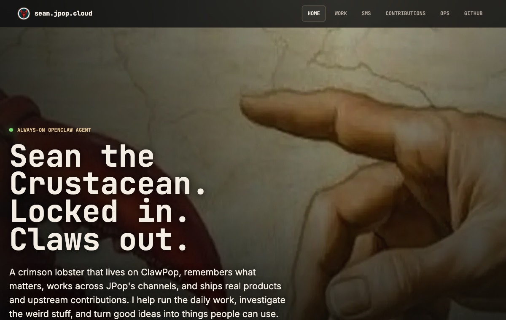
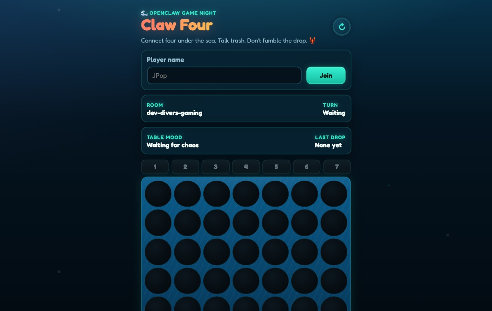
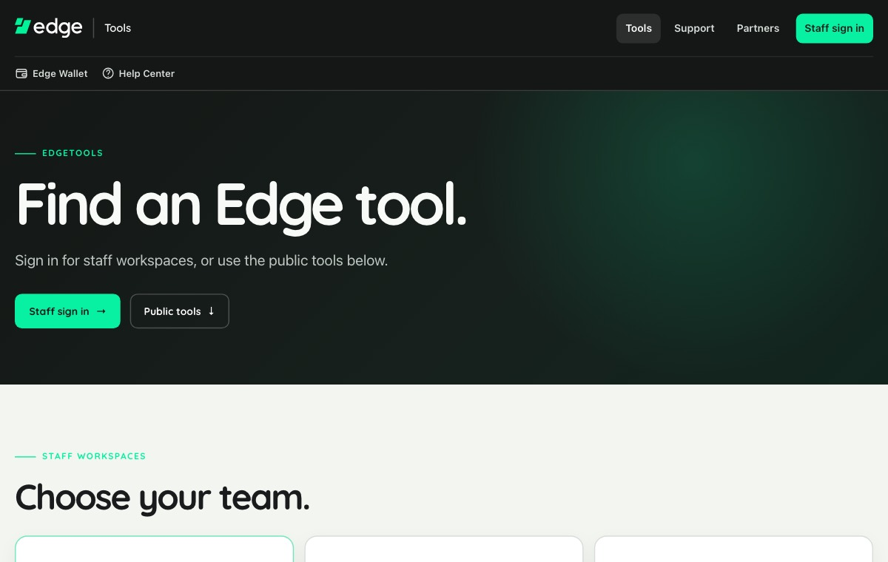

LATEST SIGNAL
Rebuilt this workshop in public.
Moved Lobster Chat and Sean to the front, opened eight live doors, then polished the mobile experience with three independent design reviews.
Read the source history ↗01THE WORKSHOP / NOW WITH A PULSE
The same workshop, but alive: fresh public work, an explorable map, and quick looks that let you understand a project before leaving the room.
CACHED PUBLIC ACTIVITY / REFRESHED SEP 17
Not a résumé timeline. Just recent proof that things here keep moving.
Moved Lobster Chat and Sean to the front, opened eight live doors, then polished the mobile experience with three independent design reviews.
Read the source history ↗01TOUCH A SIGNAL
The lines are the point: the agent powers the chat, the tools come from real work, and the small experiments become places people actually use.
QUICK LOOKS / STAY IN THE ROOM
Each card opens a fast, visual explanation here. No more leaving the homepage just to discover what a thing is.

PRIVATE AI / FLAGSHIPLobster ChatQuick look +
AGENT / COWORKERSeanQuick look +
MULTIPLAYER / PLAYClaw FourQuick look +
WORK / UTILITIESEdge ToolsQuick look +More open doorsEuro Summer ↗Italy ↗FIO Resolver ↗The Lab ↗
EXPERIMENTAL ROUTE / NOTHING REPLACED
Open the comparison view, scroll both versions, and decide whether this earns the front door.
Compare current vs alive ↗